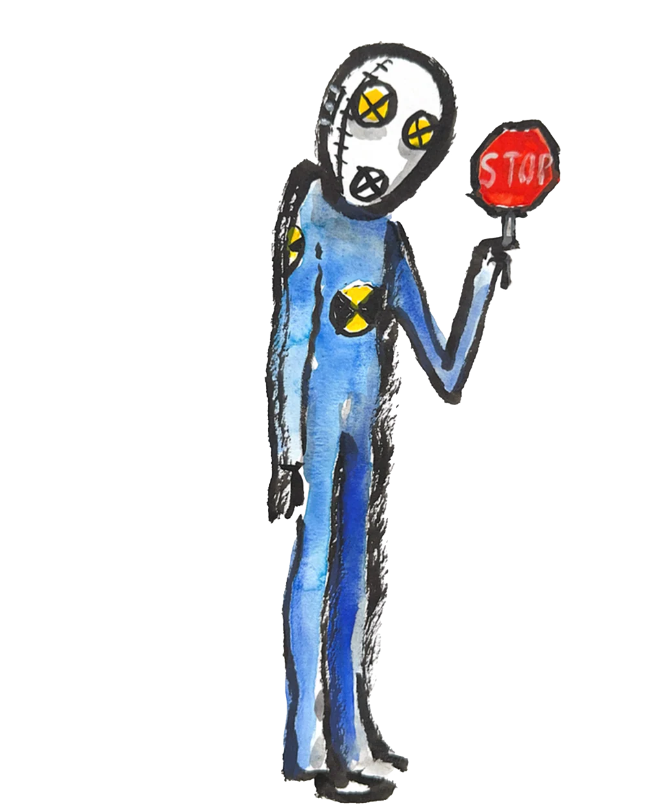

Pada Semester 1, Saya pernah mengerjakan sebuah projek kelompok
yang berbasis C++, dimana saya diperintahkan untuk membuat sistem Perpustakaan
Sederhana lengkap dengan Login, Menu Murid & Admin, sekaligus dengan berbagai fitur
Project

Sekarang saya terlibat dalam projek yang melibatkan 3 jurusan, yaitu RPL, DKV dan PSPT
untuk membuat Aplikasi E-Kantin. Nantikan!